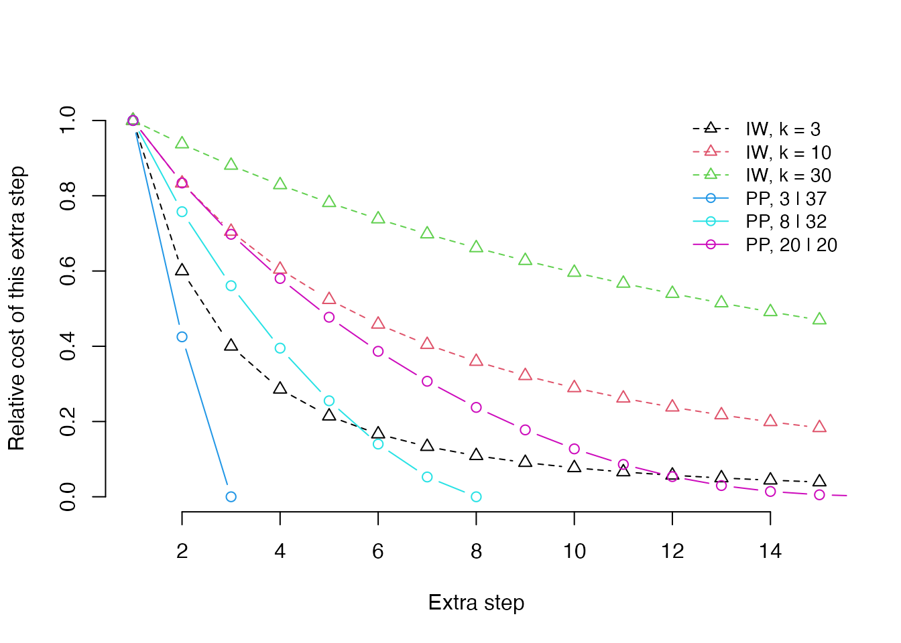

Profile parsimony
Martin R. Smith
2025-04-04
Source:vignettes/profile-scores.Rmd
profile-scores.RmdScope of this document
This document aims to give a flavour of the justification for using parsimony in general, and profile parsimony in particular, to reconstruct evolutionary history; and to summarize the mathematical/information theoretic underpinning of the profile parsimony approach.
I’ll open by acknowledging that a philosophical approach is not everyone’s cup of tea – it’s certainly not my home turf. I tend to prefer models that can be shown to work well, without worrying too much about their abstract philosophy – though admittedly, identifying a ‘best’ method is not always straightforward (e.g. Smith, 2019).
I should also acknowledge that practical considerations can influence the choice of reconstruction method: a tip-dated phylogeny cannot be accomplished in a parsimony framework, for example; and where a principled model of evolutionary change is available, as with certain subsets of molecular data, some see a compelling case for using such models to infer phylogeny.
My goal here is not to argue that any method is superior, but to develop a case that profile parsimony rests on a principled underpinning – and, if it does prove to outperform other methods in certain circumstances, to give a sense of why this might be.
A philosophy of parsimony
There are a number of complementary perspectives on the philosophical justification for a parsimony approach (e.g. Farris, 1983), which this brief overview will not do justice to; but hopefully my unqualified and largely unreferenced perspective captures some of the nature of the principal arguments. Better-versed readers are invited to suggest improvements or modifications by e-mail or by opening a GitHub issue.
Parsimony has been defended by reference to Occam’s Razor: the principle that scientists should prefer the simplest explanation that can provide an adequate account for observed data. In the context of morphological phylogenetics, “observed data” are codified as observed character states scored within a matrix. Ideally, a phylogenetic tree would explain the distribution of character states between taxa by reconstructing each character state as representing a homologous feature, with a single evolutionary origin on the tree. An explanation in which a certain trait evolved once is simpler than one in which that trait evolved twice; it is less faithful to the information inherent in the character coding, and attributes less of this information to common ancestry. Each additional step on a tree can be viewed as an additional “assumption”, and on a simple or “pure” view, the tree that makes the fewest assumptions should be preferred.
However, this perspective – which implicitly underpins the practice of equal-weights parsimony – treats all assumptions as equivalent; the simplest hypothesis is the one that makes the fewest assumptions (here, assumptions of homoplasy).
A more nuanced interpretation of Occam’s Razor suggests that the simplest hypothesis is the one that is least surprising. A hypothesis predicated on the existence of a flying spaghetti monster may require only a single (barmy) assumption, but we might nevertheless tend to prefer a hypothesis that requires a greater number of assumptions that are better aligned with previous experience.
Application of Occam’s Razor
This interpretation has two applications for phylogenetics. The first is that we may wish to prefer trees (which are depictions of phylogenetic hypotheses) that concentrate homoplasy in characters that we believe to be prone to convergent evolution. This view calls for character weighting, that is, assigning less weight to changes in characters that are believed to be less phylogenetically reliable. Such characters may be identified by successive approximations (Farris, 1969), by comparing the pattern of their tokens with that of other characters, by expert judgement, or by other a priori means.
The second application argues that each additional case of homoplasy beyond the first is successively less surprising: the first observation of homoplasy (rather than some prior intuition) taught us that the character was not entirely reliable, making a second homoplasy less unexpected; the second observed homoplasy, in turn, makes us less surprised by the third. This approach calls for a step weighting approach, in which each additional step in a given character receives less penalty than the last. (Mathematically, this can be expressed in as if it were a character weighting strategy; but I feel that its a posteriori nature conveys a subtly different motivation and justifies a separate treatment.)
This raises the question of how each step beyond the first ought to be penalized. Ultimately, any concave function (in which each step is penalized by a positive amount that is smaller than the penalty applied to the previous step) is consistent with this philosophy (Arias & Miranda-Esquivel, 2004). The most widely used step weighting approach is Goloboff’s (1993) implied weighting, where the total cost associated with a character is expressed as e / (e + k), where e is the number of homoplasies within a character, and k is an arbitrary constant. As e tends to infinity, this approach tends to equal weights; as k tends to zero, it tends to clique analysis (in which a character is either homologous or ignored) (Farris, 1983). The most appropriate value for k may depend on the number of taxa, the number and distribution of observed states, and other factors (Goloboff, Carpenter, Arias, & Esquivel, 2008; Goloboff, Torres, & Arias, 2018) (a more detailed treatment will be provided in a revision of this document). Moreover, some adjustment must be made for ‘missing’ data, i.e. ambiguous tokens, which reduce the opportunity to observe homoplasy (Goloboff, 2014). Implied weighting is described as an approximation (Goloboff, 1993), and I am not aware of a straightforward interpretation of the ‘fit’ score, or a principled definition of the nature of the quantity that is being approximated.
An information theoretic basis
I argue that the quantity that we should seek to minimise is the
“surprise” of a tree. Information theory is the science of quantifying
unexpectedness. Information is usually measured in bits. One
bit is the amount of information generated by tossing a fair coin: to
record the outcome of a coin toss, I must record either a H
or a T, and with each of the two symbols equally likely,
there is no way to compress the results of multiple tosses.
The Shannon (1948) information content of an outcome is defined to be , which simplifies to when all outcomes are equally likely. Thus, the outcome of a fair coin toss delivers of information; the outcome of rolling a fair six-sided die contains of information; and the outcome of selecting at random one of the 105 unrooted binary six-leaf trees is .
Unlikely outcomes are more surprising, and thus contain more
information than likely outcomes. The information content of rolling a
twelve on two fair six-sided dice is
,
whereas a seven, which could be produced by six of the 36 possible rolls
(1 & 6, 2 & 5, …), is less surprising,
and thus contains less information:
.
An additional 2.58 bits of information would be required to establish
whether which of the rolls 1 & 6,
2 & 5, … occurred.
Now consider two competing explanations for an event: (i), three consecutive rolls of two dice each produced a seven; (ii), two consecutive rolls of two dice each produced a twelve. The former event corresponds to of information, so is less surprising than the latter, which represents , despite involving an additional roll of the dice.
How do we measure the “surprise” associated with additional steps in
a character on a phylogenetic tree? Consider a character with the states
0 0 0 1 1 1. In the most parsimonious situation in which
the character contains a single step on a tree, it is compatible with
nine of the 105 labelled six-leaf trees, and thus represents
of phylogenetic information. If we are told that the character contains
exactly two steps, it can occur on 63 trees, so yields
.
(The number of trees with m extra steps can be calculated using
theorem 1 of Carter, Hendy, Penny, Székely, &
Wormald (1990), implemented in the function Carter1().)
Learning that a second step occurred meant that 3.54 − 0.74 = 2.81 bits
of information we had previously attributed to common ancestry instead
represent a signature of homoplasy; this quantity measures our degree of
‘surprise’.
If we subsequently learn that the character contains three steps, then it can occur on any six-leaf tree, and contains no phylogenetic information. We are less surprised by this third step, which attributes the remaining 0.74 bits of information to factors other than common ancestry, because the second step had already reduced the amount of phylogenetic information we expected the character to hold.
Profile parsimony
Although this is not how the approach was initially justified (Faith & Trueman, 2001), profile parsimony aims to ascribe as much of the information in each character as possible to common ancestry; in the example above, it assigns the first extra step a penalty of 2.81, and the second extra step a penalty of 0.74, corresponding to the amount of information that could no longer be assigned to common ancestry after learning of the existence of the th step.
Whereas the value of a parsimony score obtained under implied weights does not have any inherent meaning, the profile parsimony score of a given tree represents the amount of information within a character matrix that can be attributed to common ancestry under that tree, which, if expressed as a proportion of the total cladistic information content of the characters in the matrix (Cotton & Wilkinson, 2008), gives an indication of the degree of homoplasy in the underlying character matrix.
Profile parsimony produces a concavity profile that reflects the opportunity to observe additional steps in each character, unlike implied weighting, where a single concavity value is applied to all characters, regardless of the opportunity for additional steps to be observed.

The graph shows the profiles under implied weighting (with different
concavity constants) and profile parsimony (under different
distributions of the tokens 0 and 1 in a
character coded for forty leaves). One prominent difference between the
character of concavity profiles is that implied weighting continues to
assign relatively large penalties to additional steps even when the
distribution of a character is almost random on a tree. Another is that
profile parsimony treats a second (and each subsequent) step as less
surprising if there are fewer opportunities to observe a second step by
chance, on account of there being a smaller number of tokens with the
rarer step; implied weighting is blind to the distribution of tokens
within a character.
Implementation
The present implementation of profile parsimony in “TreeSearch” is
restricted: inapplicable tokens are treated as ambiguous; partial
ambiguity (e.g. {02}) is treated as complete
(?), and informative states (i.e. states present in more
than one taxon) beyond the first two are ignored (treated as ambiguous).
This reflects the complicated mathematics of calculating the number of
trees with a given number of steps.
Tree length can be calculated with TreeLength(concavity = "profile"),
and tree search performed with MaximizeParsimony(concavity = "profile").
Data can be prepared for profile parsimony using PrepareDataProfile(),
and the profile of a character calculated using StepInformation().